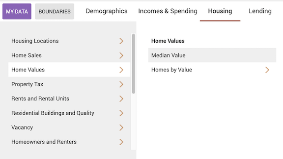
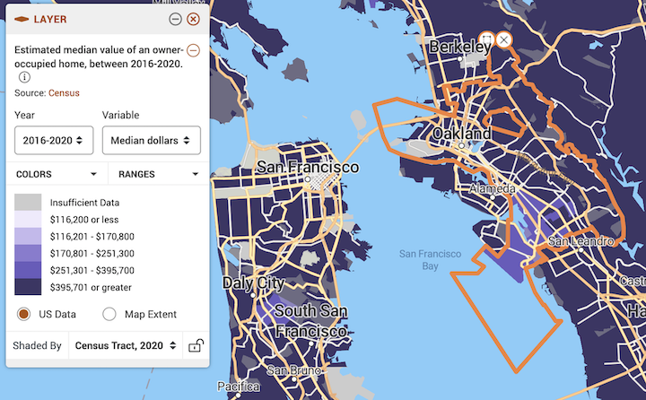
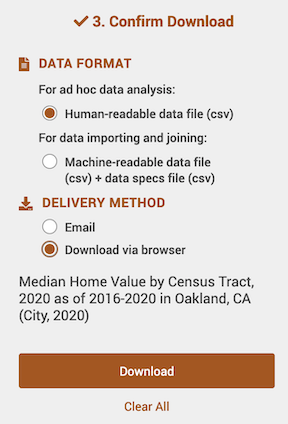
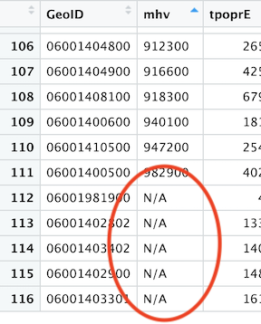
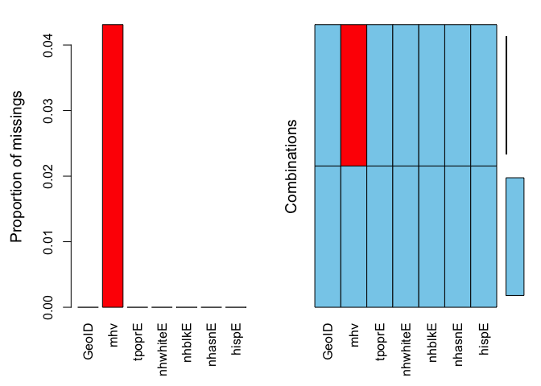

Missing Data in PolicyMap
CRD 150 - Quantitative Methods in Community Research
Professor Noli Brazil
This guide provides step-by-step instructions for downloading data from PolicyMap. PolicyMap is a fully web-based online data and mapping application that gives you access to over 15,000 indicators related to demographics, housing, crime, mortgages, health, jobs and more. Data are available at all common geographies (address, block group, census tract, zip code, county, city, state, Metropolitan area) as well as unique geographies like school districts and political boundaries.
In this guide, we will download PolicyMap census tract data for the City of Oakland. We will download median housing value. UC Davis provides full access to all PolicyMap tools for staff, students, and faculty. You can access the full site only if you are on campus or logged onto the UC Davis VPN Client. Download the PulseSecure VPN app using the directions outlined here. We will download data from the UCD PolicyMap portal and clean up the files in R. Much of this we already covered in Lab 3.
Installing and Loading Packages
We’ll be using the package VIM in this guide. Install it if you already haven’t.
install.packages("VIM")Then load it and the other packages we will be using in this guide.
library(tidyverse)
library(tidycensus)
library(VIM)Download data
- Navigate to the UC Davis PolicyMap portal. You should see a webpage that looks like the figure below. Note the UC Davis logo on the top right. Go Aggies!

- You should see a Location search bar somewhere near the top of the page. Type in “Oakland, CA” in the search bar and Oakland, CA (City) should pop up below - select it.

You should get a map that highlights Oakland’s boundaries.

- The map does not show any data. Let’s add Median Housing Value. Click on the Housing tab, followed by Median Value under Home Values.

Now your map should look like the following

- Notice in the legend window you can change various aspects of the variable, including the year

the data type

and the geographic level.

Be very careful about the geographic level. Users often do not realize that they are downloading an incorrect geographic scale. For example, you want to download census tract, but instead you download the Zip code. If you find that the geographic scale is greyed out under the pull down menu, Zoom in and out of the map.
Leave the defaults (Year: 2016-2020, Variable: Median dollars, and Shaded by: Census Tract, 2020).
Let’s download these data. At the top right of the site, click on the download icon
 .
.A window should pop up. The first screen on the left (Select Data) tells you what data to download - it should be “Estimated median value of owner-occupied home, between 2016-2020” under Layer, with “2016-2020” under Year and “Median dollars” under Variable already selected.

- The next section (Select Location) asks you to select a location. It should be City: Oakland, CA and Census Tract, 2020 for “Get values for geography”.

- The last section asks you to confirm the download. Human-readable data file (csv) should already be selected under “Data Format”. Select Download via browser under “Delivery Method”. Then click on the Download button.

- After a minute or two, a screen like below (on a Mac laptop) should pop up at the top right corner of your screen (the file name will differ from yours). You can download this file again until the date given.

- PolicyMap allows you to download only one variable at the time. So, you’ll need to go through the above steps again to get other variables. Follow the same steps above to download these data as a csv into an appropriate folder on your hard drive. For example, to get percent black, navigate to the Demographics tab, then under Race, Ethnicity, Diversity select Race and then Black or African American. To download percent Hispanic, navigate to the Demographics tab, then under Race, Ethnicity, Diversity select Ethnicity, then Hispanic or Latino by Race, and finally All.
After you’ve downloaded a csv file whether through PolicyMap or another source, do not open it up in Excel to manipulate or alter the data in any way. All of your data wrangling should be done in R
Data Wrangling in R
Bring in the data using read_csv().
pm.file <- read_csv("YOUR FILE NAME HERE")Let’s keep the necessary variables: GeoID and mhv. GeoID is the tract GEOID.
pm.file <- pm.file %>%
select(GeoID, mhv)Merging with Census API data
Let’s bring in some census data from the Census API. We covered how to use get_acs() from the tidycensus package in Lab 3. Make sure the ACS years match up between PolicyMap and Census API data. Census tract boundaries changed in 2020, which means that 2016-2020 tract data will not completely merge with ACS data between 2010 and 2019.
ca <- get_acs(geography = "tract",
year = 2020,
variables = c(tpopr = "B03002_001",
nhwhite = "B03002_003", nhblk = "B03002_004",
nhasn = "B03002_006", hisp = "B03002_012"),
state = "CA",
survey = "acs5",
output = "wide")
ca <- ca %>%
select(GEOID, tpoprE, nhwhiteE, nhblkE, nhasnE, hispE)Merge in ca into pm.file. The linking variable is GeoID in pm.file and GEOID in ca.
pm.file <- pm.file %>%
left_join(ca, by = c("GeoID" = "GEOID"))Dealing with missing values
Missing values are a part of a social scientist’s life. You can’t avoid them.
You will notice that PolicyMap designates missing values as N/A.

R designates missing as NA. Therefore, R reads N/A as a character. This means that R does not recognize mhv as a numeric but a character.
class(pm.file$mhv)## [1] "character"We need to replace N/A with NA and then convert it to numeric
pm.file <- pm.file %>%
mutate(mhv = as.numeric(ifelse(mhv == "N/A", "NA", mhv)))The code ifelse(medval == "N/A", "NA", medval) says that if the variable mhv equals “N/A”, replace it to “NA”, else keep its original value stored in mhv. as.numeric() converts mhv to a numeric.
class(pm.file$mhv)## [1] "numeric"The next step is to determine what percentage of your cases are missing data. The best function for doing this in R is aggr(), which is in the VIM package. Run the aggr() function as follows
summary(aggr(pm.file))
##
## Missings per variable:
## Variable Count
## GeoID 0
## mhv 5
## tpoprE 0
## nhwhiteE 0
## nhblkE 0
## nhasnE 0
## hispE 0
##
## Missings in combinations of variables:
## Combinations Count Percent
## 0:0:0:0:0:0:0 111 95.689655
## 0:1:0:0:0:0:0 5 4.310345The results show two tables and two plots. The left-hand side plot shows the proportion of cases that are missing values for each variable in the data set. The right-hand side plot shows which combinations of variables are missing. The first table shows the number of cases that are missing values for each variable in the data set. The second table shows the percent of cases missing values based on combinations of variables. The results show that 5 or 4.3% of census tracts are missing values on the variable mhv.
In any statistical analysis, you will need to deal with missing values. For example, if you wanted to find out the average median housing value in Oakland tracts, you would type in
mean(pm.file$mhv)## [1] NAThe mean is NA, which tells you that there are missing values in the variable mhv that you need to deal with before R calculates a value. There are many ways that one can deal with missing data. One method is to just simply ignore or discard cases with a missing value. To do this in the mean() function (and in many other R functions), you include the argument na.rm = TRUE
mean(pm.file$mhv, na.rm = TRUE)## [1] 711477.5As long as a large proportion of your data set is not missing data, simply ignoring missing data is often acceptable. Just make sure you are transparent about what you did.

This work is licensed under a Creative Commons Attribution-NonCommercial 4.0 International License.
Website created and maintained by Noli Brazil